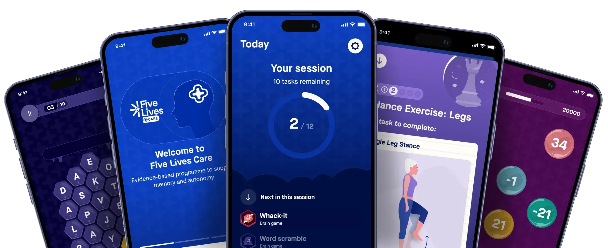

Try free for 7 days
Introducing Five Lives Care
An evidence-based programme to support memory and autonomy for people aged 60+. It combines light physical activity and science-backed brain training into a simple daily routine.
Takes 5 minutes · No commitment · Includes a 7-day free trial

What happens if you wait?
Memory worries often sit in the background, creating silent stress for you and your family. Without a proactive plan, it's easy to lose track of changes or fall into habits that don't support your brain health.
You don't have to panic — but you shouldn't ignore the signals either.
- Uncertainty about the future with no clear plan to follow.
- Stress and tension within the family over "what if."
- Missing out on proactive habits that protect long-term independence.
Why Five Lives Care
Science-backed support
for your brain health.
Clinical Expertise
Developed with leading memory centres in the UK and France, and validated in peer-reviewed research.
Built for 60+
High-contrast, easy-to-use interface designed for older adults — no tech experience needed.
Holistic Health
Combines cognitive brain games with gentle physical movement for whole-body brain health.
Simple to start
Your path to better brain health
Take the Quiz
Answer a few simple questions about your memory health and lifestyle habits.
Install the App
Download Five Lives Care on your iPhone or iPad and set up your profile in minutes.
Claim Your Free Trial
Unlock 7 days of full access — no commitment, no payment details required upfront.
Track Progress
Monitor your cognitive trends month by month and see the real impact of your routine.
What's inside
One routine. Two ways to thrive.
By combining stimulating brain games with gentle physical exercises, Five Lives Care helps you stay sharp and steady — giving you the best chance to maintain your independence for longer.
Train your brain daily
Clinically-validated games that target the five key cognitive domains identified by memory specialists.
- Verbal memory & fluency
- Spatial memory exercises
- Processing speed training
- Executive function games
Move to protect your mind
Gentle, guided exercises designed for older adults that support balance, coordination, and brain blood flow.
- Balance & steadiness exercises
- Gentle stretching routines
- Adaptable to your mobility
- Guided video & audio sessions
What people say
Trusted by people just like you
"I was worried about my memory but didn't know where to start. Five Lives gave me a clear, manageable routine I actually look forward to every morning."
"My GP mentioned being proactive about brain health, and a friend recommended Five Lives. After 3 months, my monthly assessments are trending in the right direction."
"Very easy to use — and I'm not great with technology! The exercises are gentle but effective, and knowing it's clinically backed gives me real confidence."
Built on a foundation of trust.
Our programme is evidence-based and developed in collaboration with top memory specialists to ensure every minute you spend in the app contributes to your cognitive well-being. Five Lives Care is the result of years of research and development across leading memory centres in the UK and France.
Free quiz · 5 minutes · 7-day free trial
Ready to take the first step?
Answer a few simple questions about your memory, lifestyle, and daily habits. Complete the quiz and unlock a 7-day free trial of Five Lives Care — no commitment required.